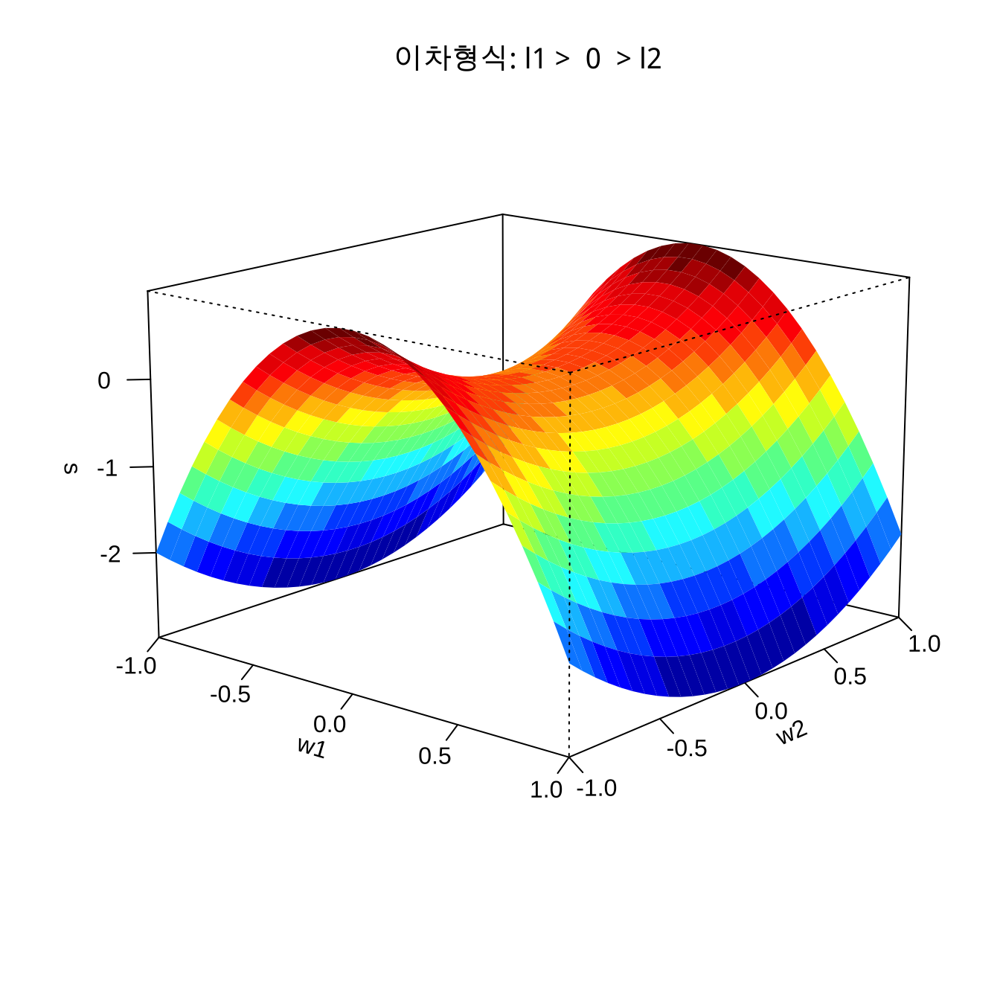

제 4 장 2차모형의 정준분석
4.1 개요
여러번의 간단한 실험을 순차적으로 수행하면서 1차모형과 최대경사법을 이용하여 최적점 근처로 실험점을 이동한다.
최적조건 근처의 영역에서는 반응표면모형의 모형으로 곡선효과가 고려된 2차 다항 모형을 가정하고 최적점을 찾는다.
2차 다항 모형은 계수의 추정치에 따라서 반응표면의 모양을 4가지 모양으로 크게 분류하할 수 있다.
추정된 2차 모형이 어떤 모양에 해당하는지 판단할 수 있는 기법인 정준분석(canonocal analysis)을 적용한다.
4.2 이차형식
임의의 벡터 \(\bm x\)에 대하여 차원이 \(k \times k\) 인 대칭 행렬 \(\bm B\) 이 주어진 경우 이차형식(quadratic form) \(s(\bm x, \bm B)\)는 다음과 같이 정의된다.
\[\begin{equation} s(\bm x, \bm B) = {\bm x}^t \bm B \bm x \tag{4.1} \end{equation}\]
만약 행렬 \(\bm B\)의 고유값이 다음과 같고
\[ \lambda_1 ,\lambda_2 , \dots , \lambda_k \]
이에 대응하는 고유벡터가 다음과 같다고 하자.
\[ \bm q_1, \bm q_2 , \cdots , \bm q_k \]
자세한 고유값과 고유젝터에 대한 이론은 부록을 참조하자.
대칭 행렬 \(\bm B\)의 고유값과 고유벡터를 이용하면 다음과 같은 스펙트럴 분해(spectral decomposition)가 가능하다 (부록 참조).
\[\begin{equation} \bm B = \bm Q \bm \Lambda {\bm Q}^t = \lambda_1 \bm q_1 \bm q_1^t + \lambda_2 \bm q_2 \bm q_2^t + \cdots + \lambda_k \bm q_k \bm q_k^t \tag{4.2} \end{equation}\]
이제 식 (4.1) 에서 정의된 이차형식은 스펙트럴 분해를 이용하여 다음과 같은 분해가 가능하다.
\[\begin{align} s(\bm x, \bm B) & = {\bm x}^t \bm B \bm x \notag \\ & = {\bm x}^t \bm Q \bm \Lambda {\bm Q}^t \bm x \notag \\ &= {\bm x}^t \left [ \lambda_1 \bm q_1 \bm q_1^t + \lambda_2 \bm q_2 \bm q_2^t + \cdots + \lambda_k \bm q_k \bm q_k^t \right ] \bm x \notag \\ & = \sum_{i=1}^k \lambda_i ( {\bm x}^t \bm q_i) (\bm q_i^t \bm x) \notag \\ & = \sum_{i=1}^k \lambda_i w_i^2 \tag{4.3} \end{align}\]
여기서
\[ w_i = {\bm x}^t \bm q_i = \bm q_i^t \bm x, \quad i=1,2,\dots, k \]
4.3 2차 다항식의 정준형식
앞 절에서 논의한 것을 정리하면 2차 다항식의 예측식은 식 (3.8) 에서 정의된 변수 \(\bm z = \bm x - {\bm x}^*\) 를 이용하여 식 (3.10) 과 같이 표현할 수 있으므로 다음과 같이 정준형식으로 나타낼 수 있다.
\[\begin{align} \hat y & = \hat y_s + {\bm z}^t \bm B {\bm z} \notag \\ & = \hat y_s + \lambda_1 w_1^2 + \lambda_2 w_2^2 + \cdots + \lambda_k w_k^2 \tag{4.4} \end{align}\]
여기서
\[w_i = {\bm z}^t \bm q_i = \bm q_i^t \bm z, \quad i=1,2,\dots, k \]
\[ \hat y_s = b_0 - \frac{1}{4} {\bm b}^t {\bm B}^{-1}{\bm b} \]
위의 식 (4.4) 을 2차 다항식의 정준형식(canonical form) 이라고 부른다.
이제 행렬 \(\bm B\) 의 고유값을 이용한 정준분석을 이용하여 다음과 같이 정상점의 형태와 최적점의 유무를 알아낼 수 있다.
| 행렬 \(\bm B\) 의 고유값 | 정상점은 |
|---|---|
| 모두 음수이면 | 최대점(최적점) |
| 모두 양수 이면 | 최저점 |
| 양수와 음수가 섞여있으면 | 안장점 |
4.4 변환된 변수
2차 다항식의 정준형식 (4.4) 에 나타난 변환된 변수 \(w_i\) 와 원래 사용된 변수 \(x_i\) 의 관계를 알아보자.
변수 \(z_i\) 는 원래 변수 \(x_i\) 에서 정상점 \(x_i^*\) 를 빼서 만든 변수이다 [ 식 (3.8) 참조]. 또한 \(w_i = {\bm q}_i^t \bm z\) 이므로 다음과 같은 변환식이 얻어진다.
\[\begin{equation} \bm w = \begin{bmatrix} w_1 \\ w_2 \\ \vdots \\ w_k \end{bmatrix} = \bm Q^t \bm z = \bm Q^t (\bm x -\bm x^*) \tag{4.5} \end{equation}\]
여기서 행렬 \(\bm Q\) 는 행렬 \(\bm B\) 의 고유벡터들로 이루진다. 따라서 행렬 \(\bm Q\) 는 직교행렬이다.
\[ \bm Q = [ \bm q_1~ \bm q_2 ~ \dots \bm q_k], \quad \bm Q^t \bm Q = \bm Q \bm Q^t = \bm I \]
따라서 식 (4.5) 에서 정의된 변환은 벡터 \(\bm z\)를 행렬 \(\bm Q\) 를 이용하여 회전하는 변환이다.
\[ \bm w^t \bm w = \bm z^t \bm Q \bm Q^t \bm z = \bm z^t \bm z \]

4.5 예제: 2개의 독립 변수
만약 독립변수가 2개 있는 2차 다항 모형에서는 행렬 \(\bm B\)의 차원은 \(2 \times 2\)이다. 따라서 행렬 \(\bm B\)의 고유치는 \(\lambda_1\) 과 \(\lambda_2\) 라고 하자.
이 경우는 2차 형식이 다음과 같이 분해될 수 있다.
\[ s(\bm x, \bm B) = \bm x^t \bm B \bm x = \lambda_1 w_1^2 + \lambda_2 w_2^2 \]
위의 2차 형식을 계산하는 함수를 R 로 만들어 보자.
quad <- function(w1, w2, l1, l2){
l1*w1^2 + l2*w2^2
}\(\lambda_1 < \lambda_2 < 0\) 의 경우
이차형식 \(s(\bm x, \bm B)\) 는 정상점이 최대 반응점이 되며 \(w_2\) 에 비하여 \(w_1\) 축으로 반응의 변화가 급하다.
\(\lambda_1 =-4\), \(\lambda_2 =-1\) 인 경우 2차 형식의 형태는 다음과 같다.
w1 <- w2 <- seq(-1, 1, length= 30)
s <- outer(w1, w2 ,quad, -4, -1)
persp3D(w1, w2, s,
main="이차형식: l1 < l2 < 0",
zlab = "s",
theta = 30, phi = 15)\(\lambda_1 > \lambda_2 > 0\) 의 경우
이차형식 \(s(\bm x, \bm B)\) 는 정상점이 최소 반응점이 되며 \(w_2\) 에 비하여 \(w_1\) 축으로 반응의 변화가 급하다.
\(\lambda_1 =2\), \(\lambda_2 =1\) 인 경우 2차 형식의 형태는 다음과 같다.
w1 <- w2 <- seq(-1, 1, length= 30)
s <- outer(w1, w2 ,quad, 3, 1)
persp3D(w1, w2, s,
main="이차형식: l1 > l2 > 0",
zlab = "s",
theta = 40, phi = 20)\(\lambda_1 >0\), \(\lambda_2 <0\), \(|\lambda_1| > |\lambda_2\) 의 경우
이차형식 \(s(\bm x, \bm B)\) 는 정상점이 안장점(saddle point)이 되며 \(w_2\) 축으로는 반응값이 감소하게 되고 \(w_1\) 축으로는 반응값이 증가하게 된다. 또한 \(w_2\) 에 비하여 \(w_1\) 축으로 반응의 변화가 급하다.
\(\lambda_1 = - 3\), \(\lambda_2 =1\) 인 경우 2차 형식의 형태는 다음과 같다.
w1 <- w2 <- seq(-1, 1, length= 30)
s <- outer(w1, w2 ,quad, -3, 1)
persp3D(w1, w2, s,
main="이차형식: l1 > 0 > l2",
zlab = "s",
theta = 40, phi = 15)
\(\lambda_i \approx 0\) 인 경우
반응표면 체계가 능선 체계(ridge system)이라고 한다. 능선 체계에서는 최적점이 무수히 많은 정상 능선 체계(stationary ridge system)와 능선이 한 방향ㅇ으로 계속 증가하는 형태(rising ridge system)으로 나뉜다. 올라가는 능선 체계에서는 현제의 실험 영역에서 최적점이 없기 때문에 실헌 영역을 변경하여 다시 실험을 진행해야 한다.
\(\lambda_1 = 0\), \(\lambda_2 =1\) 인 경우 2차 형식의 형태는 다음과 같다.
w1 <- w2 <- seq(-1, 1, length= 30)
s <- outer(w1, w2 ,quad, 0, 1)
persp3D(w1, w2, s,
main="이차형식: l1 = 0 ",
zlab = "s",
theta = 40, phi = 15)